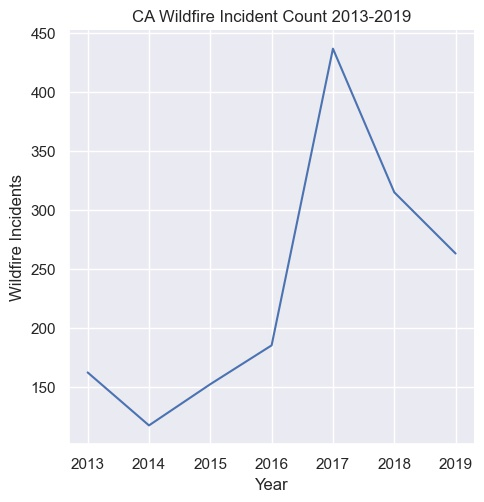
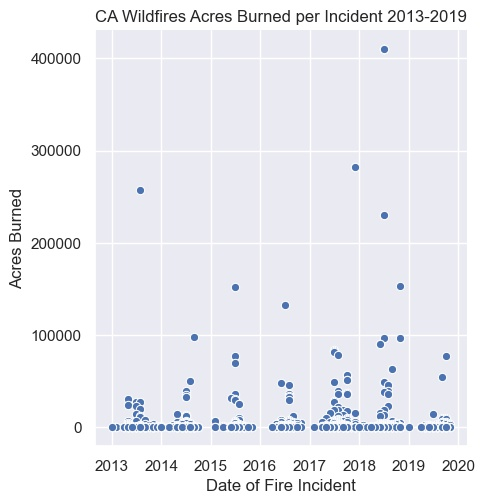
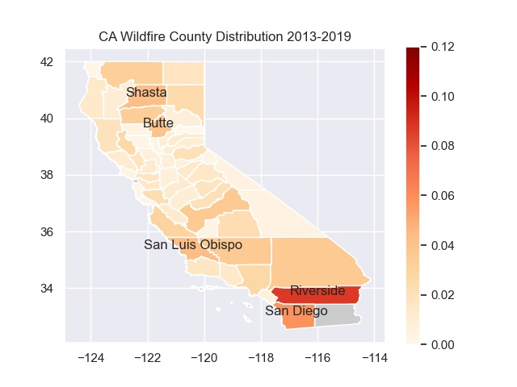
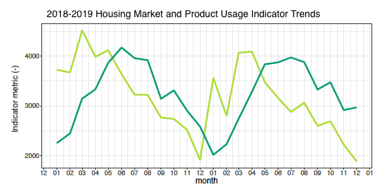
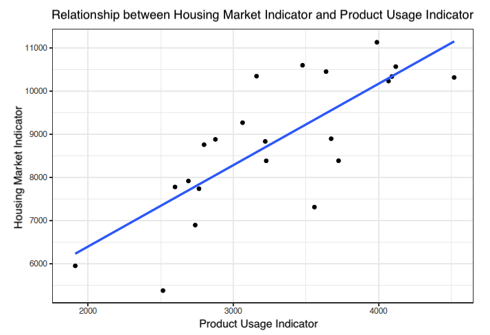
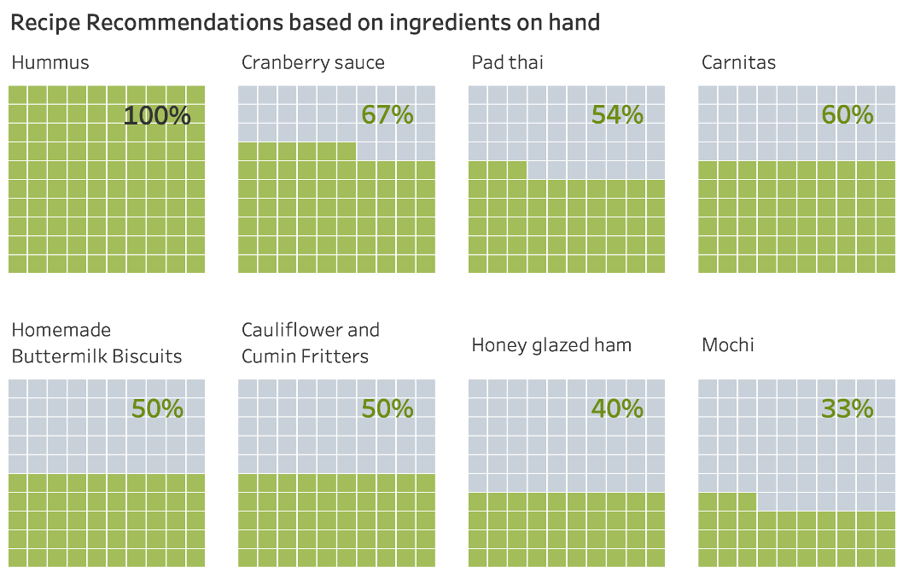
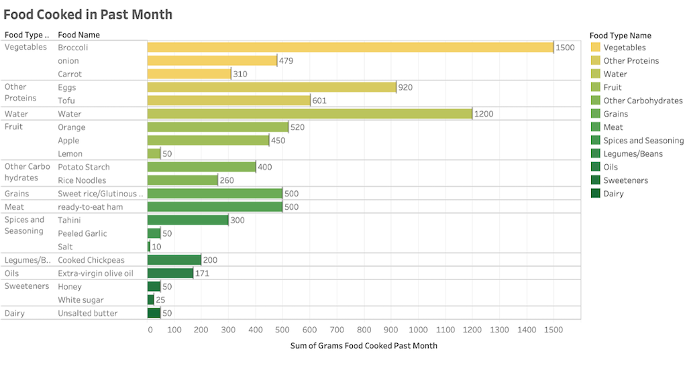
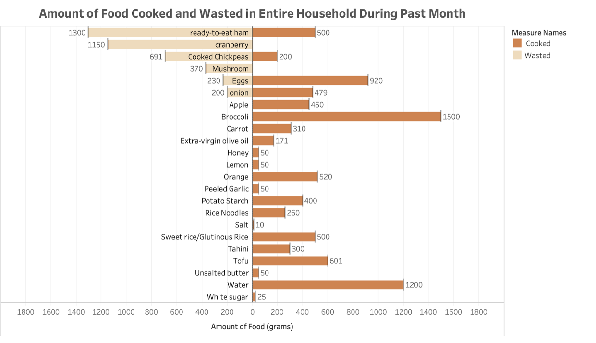

Highlighted Data Projects
An Exploration of CA Wildfires in Recent Years
Have CA Wildfires Been Happening More Frequently or Severely?
In the past two years, wildfires in Australia and California have been concerning to many people. There have been debates about whether this was a sign of climate change, and some have refused to acknowledge the situation. Because the message communicated in media is often biased, in an attempt to gain some clarity, I performed an exploratory analysis using real data of CA wildfire incidents ranging between 2013-2019 to investigate whether CA wildfire patterns have changed in the past few years. I defined three questions of interest:
The wildfires dataset I used was created from incident information provided on the California Department of Forestry and Fire Protection website and posted on Kaggle. It represents a list of wildfire incidents recorded on the CAL FIRE website between 2013 – 2019. Each row in this dataset is a wildfire that occurred. For the scope of this project, I used the columns recording the acres burned, the location of the fire (longitude, latitude) and the start dates of the fire. The dataset also includes additional information, including fatalities caused, extinguish dates, location descriptions, statuses of each incident at the time the dataset was created, and the original URL to each row of data.
In addition, for geospatial analysis of wildfire patterns, I used the California counties dataset provided on ArcGIS, this dataset contains shape information for the counties in California and was used to plot a background map on which to mark the wildfires.
Have wildfires been happening more frequently in CA?
From the plot, we can see that there are some ups and downs in the line plot. It shows an increase in 2014-2017, then a decrease in 2017-2019. Regardless of the ups and downs, it appears that there is an overall increase in wildfire incidents per year, specifically when looking at the data in 2017-2019, compared to that of 2013-2016, the yearly incident count has been generally higher. From these results, it is alarming how much the yearly incident count increased from 2014-2017, and it raises the question of what we would see with data that goes further back; perhaps there were years in the past that had as many wildfire incidents as in 2017. But from this dataset, we see that yearly wildfire incidents have increased in the past 7 years, and assuming the data collected accurately reflects the reality, it would be alarming, as wildfires destroy forests and homes and result in bad air quality. There is also the underlying concern that this trend is reflecting abnormal changes in the climate which raises a bigger issue.

Have CA wildfires increased in severity?
Although there were a few wildfires that were significantly more severe in 2018, most of the fires are actually much lower in acres burned: the median area burned per fire is 100 acres and the 75th percentile is 422.5 acres. These values show that most fire incidents are smaller fires, which we can also see from the dense points in the plot at lower values of acres burned. The correlation coefficient and p-value of acres burned over time, where time was converted to an ordinal value, were 0.03 and 0.29 respectively. With a correlation coefficient close to 0, we see that there isn’t really any correlation between acres burned per fire and time. The p-value is a measure of the confidence we have to reject a null hypothesis that there is really no correlation between the acres burned per fire and date, but in this case,, since the computed correlation coefficient is close to 0, there is no meaning in measuring the p-value.
From the plot, we can also see what looks like seasonality of fires: wildfires are more likely to happen in summer months than at other times of the year, and the more severe fires seem to mostly be happening in summer months. From these results, we see the great range of severity of wildfires; in particular, there have been more severe fires in 2018. Even though the wildfires have not been increasing in severity in general, just a few particularly severe fires could cause significant damage to lives or property, hence it is worth investigating the causes of the most severe fires.

Where have the CA wildfires been occurring?
The CA county map is colored by the ratio of fires that occurred in each county in 2013-2019 below; the 5 counties with the highest ratios are labeled on the map. We can see that the counties that had the most fire incidents are Riverside County, San Diego County, San Luis Obispo County, Shasta County and Butte County. These results only show the number of incidents, so they might not reflect the severity of the fires. From the plot, we can see that the wildfire incidents seem to be scattered throughout the entire state, with counties in the northeast region and the southern region having the most fires. With closer observation, the counties in the mid-region tend to be smaller counties, which could be a reason why it appears as if they had fewer wildfires; if we combined a few smaller counties the total incident count might be similar to the larger counties with a higher incident ratio. For future work, it would be interesting to examine the area burned relative to the size of each county.

Housing Market Prediction
- An internship project at MoxiWorks LLC.
MoxiWorks LLC is a real-estate software company that offers SaaS products to real estate brokerages and agents. Their most popular product is a CMA software, MoxiPresent, which gives real estate agents a way to create dynamic presentations to present listings, compare listings and create estimates in real time. Other products include CRM software tailored for real estate agents and a platform for agent website creation.
I interned at MoxiWorks as a data analyst in 2020, during which I worked on creating a forecasting model to predict certain housing market indicators in various housing markets in the United States. To protect the data privacy of MoxiWorks and its clients, the specific variables of the housing market and product usage in this project are not disclosed and are instead referred to as housing market indicators and product usage indicators.
From the time series plot created, it is clear that there is some sort of correlation between the housing market indicator and the product usage indicator; this suggests that we can predict the housing market indicator based on the product usage indicator.

On the right is a scatter plot of the housing market indicator vs the product usage indicator after accounting for the 2-month time lag of the housing market indicator. The correlation coefficient is 0.77 (p < 0.01), which means the data shows a statistically significant strong correlation between these variables. A linear regression line is fitted to the data to allow the company to project housing market indicators two months into the future.
A similar methodology may be repeatedly applied to obtain separate forecasting models for different housing markets and for different housing market and product indicators.

Database Design for a Smart Fridge
- In collaboration with Eddie Tuohy and Zoe Zhu
The motivation of this project is rooted in our goal to reduce food waste. As busy graduate students, Eddie, Zoe and I sometimes found ourselves struggling to manage our own fridges, which led to food waste. Hence, we wanted to use data to support people in the management of their food inventory. Our idea was to build a database which could track food inventory in a household, detailing the number of foods, the amount of each food available and their expiration dates; this information, in combination with recipe data, would allow our database to support recipe recommendations based on what was currently in the fridge. In the process of working on our entity relationship diagram (ERD), we thought of including nutritional information in our database, which allowed us to expand the functionality of our design to include diet management. The final design of our database tracks food purchase and usage habits in a household and provides insightful information to support both diet management and food management (food waste reduction) tasks.


Food Waste Reduction
Our design tracks food waste and consumption, and users may compare the wasted amount vs consumed amount of each type of food in the past to aid them in making purchase decisions in the future.
In addition, it has the capability to make recipe recommendations based on the ingredients readily available in a household; users may clearly see the percentage of ingredients available in their inventory for each recipe.
Diet Management
Users may also display the calorie and nutrition information of each recipe, and they have the option to see how much food in each food group they have consumed to help them meet diet goals.
